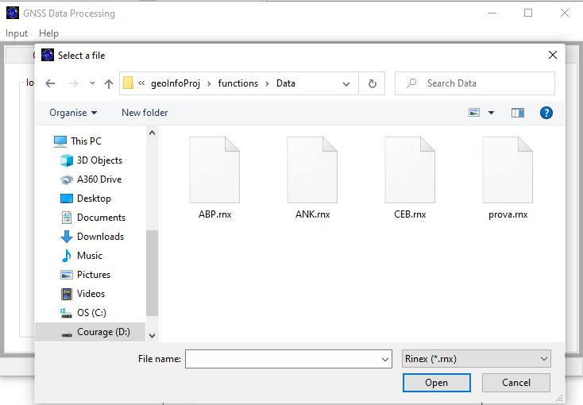
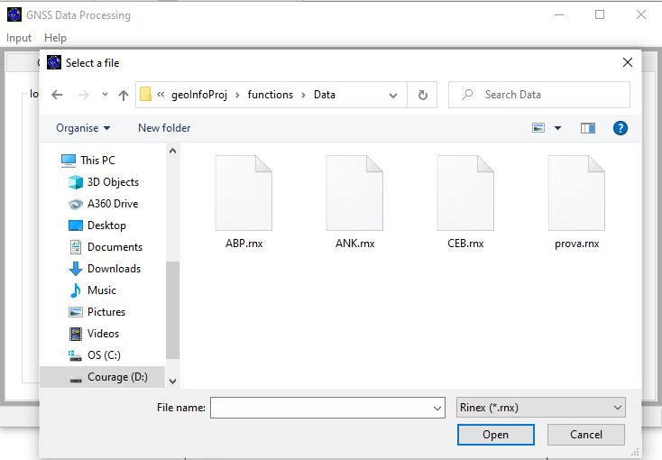
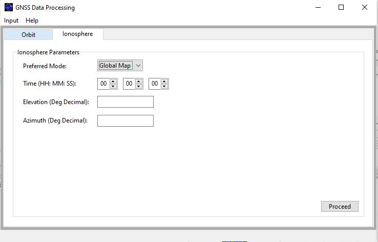
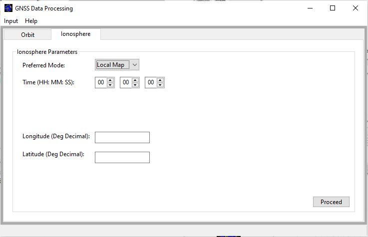
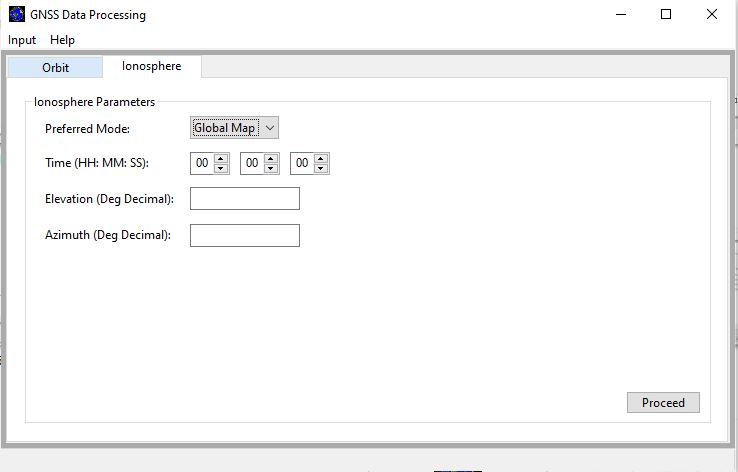
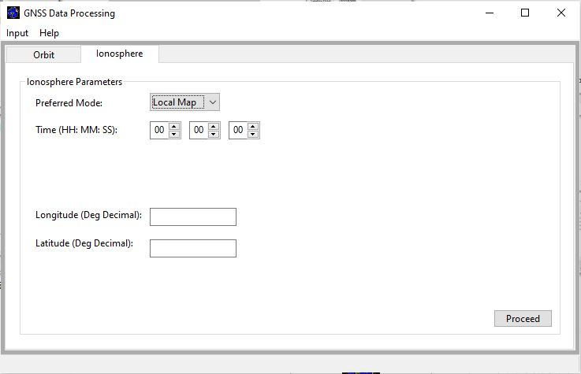

Menu Items
File
The File menu contains the items Open and Close.
 The Open menu item is needed to open a GPS Navigation message file (.rnx) before the main functionalities can be
accessed.

When the file is not of the type ‘.rnx’, an error message is printed to the user as shown below
defining the error and by closing the dialog, the user can select the required file type.
The Open menu item is needed to open a GPS Navigation message file (.rnx) before the main functionalities can be
accessed.

When the file is not of the type ‘.rnx’, an error message is printed to the user as shown below
defining the error and by closing the dialog, the user can select the required file type.
 The Close menu item exits the main window of the GUI.
The Close menu item exits the main window of the GUI.
Modules
The Modules menu shows the main functionalities (Satellite Orbit and Ionospheric Model) for the software.
 The Satellite Orbit item gives navigation to the Orbit panel.
The Ionospheric Model navigates to the Ionosphere panel where the paramters needed for performing the Ionosphere computation are needed. On this panel, the user selects the preferred model (Station analysis or Globe analysis).
The Satellite Orbit item gives navigation to the Orbit panel.
The Ionospheric Model navigates to the Ionosphere panel where the paramters needed for performing the Ionosphere computation are needed. On this panel, the user selects the preferred model (Station analysis or Globe analysis).
 By selecting the Globe aanalysis, the panel is updated, exposing the buttons for inserting the paramters (time, elevation and azimuth). The default values in the buttons are zeros and the user can change the values. Also, only numerical values can be entered in each button. By clicking on the ‘Proceed’ button, an Ionospheric Error map is produced showing the variations in the ionospheric effects on the globe.

By selecting the station analysis, the panel is also updated, exposing the buttons for inserting the parameters (time, longitude and latitude) required for the model. Also, the default values in the buttons are zeros and the user can change the values. By clicking on the ‘Proceed’ button, an Ionospheric Error map is produced showing the variations in the ionospheric effects on the globe.

In both instances of Global and station analysis, when a GPS Navigation message file has not been selected, the user is informed of the unavailability of the Rinex file and given a guide to select the file.
Also, when a file is selected and there are no ionospheric error correction parameters in the file, the user is also informed of such and can select another file.
By selecting the Globe aanalysis, the panel is updated, exposing the buttons for inserting the paramters (time, elevation and azimuth). The default values in the buttons are zeros and the user can change the values. Also, only numerical values can be entered in each button. By clicking on the ‘Proceed’ button, an Ionospheric Error map is produced showing the variations in the ionospheric effects on the globe.

By selecting the station analysis, the panel is also updated, exposing the buttons for inserting the parameters (time, longitude and latitude) required for the model. Also, the default values in the buttons are zeros and the user can change the values. By clicking on the ‘Proceed’ button, an Ionospheric Error map is produced showing the variations in the ionospheric effects on the globe.

In both instances of Global and station analysis, when a GPS Navigation message file has not been selected, the user is informed of the unavailability of the Rinex file and given a guide to select the file.
Also, when a file is selected and there are no ionospheric error correction parameters in the file, the user is also informed of such and can select another file.